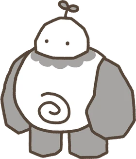

お問い合わせ
ゲーム中に困ったことがあれば、いつでもお知らせください。シッターさんからのメッセージは一つひとつ丁寧に読んでお返事します。

あわせてお送りください
- ゲームのニックネームとマイID（ゲーム内の設定画面でコピーできます）
- 端末の機種、OSバージョン、ゲームバージョン
- 問題が起きた状況と日時、できればスクリーンショット
- 決済に関するお問い合わせは、ストアのレシートに記載された注文番号
よくある質問
機種変更やアプリの削除でデータは消えますか？
ゲストでプレイしている場合、アプリを削除したり機種を変更したりすると、データを見つけにくくなります。ゲーム内の設定でGoogleまたはAppleアカウントと連携しておけば、新しい端末で同じアカウントにログインして、そのまま続きから遊べます。
連携しないままデータをなくしてしまいました。
ニックネーム、ポンポンの名前、フレンドや「いいね」のおおよその数、最後に遊んだ時期、購入履歴など、覚えている情報をできるだけ詳しくお知らせください。確認できれば復旧をお手伝いします。ただし、情報が少ないと復旧できない場合があります。
購入したのにアイテムが届きません。
アプリを完全に終了してから、もう一度起動してください。それでも届かない場合は、ストアのレシートに記載された注文番号を添えてお問い合わせください。
返金はどうすればいいですか？
決済は各ストアで処理されるため、返金も各ストアのポリシーに従います。App Storeはreportaproblem.apple.comから、Google PlayはPlayストアの購入履歴からリクエストできます。詳しくは利用規約第22条をご覧ください。
サブスクリプションの解約方法を教えてください。
iPhoneは設定 → ユーザー名 → サブスクリプション、AndroidはPlayストア → プロフィール → お支払いと定期購入 → 定期購入から解約できます。解約後も、支払い済みの期間が終わるまで特典はそのまま使えます。
通知が届きません。
端末の設定で、ポンポンドゥードゥーの通知が許可されているかご確認ください。省電力モードやおやすみモードでは、通知が遅れたり届かなかったりすることがあります。
アカウントとデータの削除
ゲーム内の設定 → アカウント削除から、アカウントとゲームデータをご自身で削除できます。削除したデータは元に戻せません。アプリを使えない場合は、ニックネームまたはIDを添えてcs@olo-g.comまで削除をご依頼ください。法令により保管が必要な決済記録は、プライバシーポリシーに定める期間保管した後に破棄します。